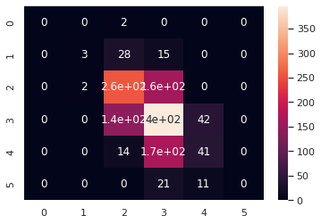

Data Science Foundations, Lab 3: Practice with Feature Engineering and Pipelines¶
Instructor: Wesley Beckner
Contact: wesleybeckner@gmail.com
In this lab we will continue to practice creation of pipelines and feature engineering. We will use the wine dataset.
import pandas as pd
import numpy as np
import matplotlib.pyplot as plt
import plotly.express as px
import seaborn as sns; sns.set()
from sklearn.preprocessing import OneHotEncoder, StandardScaler
from sklearn.impute import SimpleImputer
from sklearn.metrics import mean_squared_error, r2_score, classification_report, confusion_matrix
from sklearn.linear_model import LogisticRegression, LinearRegression
from sklearn.model_selection import train_test_split
from statsmodels.stats.outliers_influence import variance_inflation_factor
wine = pd.read_csv("https://raw.githubusercontent.com/wesleybeckner/"\
"ds_for_engineers/main/data/wine_quality/winequalityN.csv")
On Wine Density¶
L1 Q1: Feature Derivation¶
- Fill in any missing data in your dataset using imputation and use this new data for Q2-Q3
- One-Hot encode categorical variables in the wine dataset
# Code Cell for L1 Q1
display(wine.head())
print(wine.shape)
str_cols = ['type']
enc = OneHotEncoder()
imp = SimpleImputer()
enc.fit_transform(wine[str_cols])
X_cat = enc.transform(wine[str_cols]).toarray()
X = wine.copy()
X.pop('type')
y = X.pop('density')
X = imp.fit_transform(X)
X = np.hstack([X_cat, X])
print(y.shape)
print(X.shape)
| type | fixed acidity | volatile acidity | citric acid | residual sugar | chlorides | free sulfur dioxide | total sulfur dioxide | density | pH | sulphates | alcohol | quality | |
|---|---|---|---|---|---|---|---|---|---|---|---|---|---|
| 0 | white | 7.0 | 0.27 | 0.36 | 20.7 | 0.045 | 45.0 | 170.0 | 1.0010 | 3.00 | 0.45 | 8.8 | 6 |
| 1 | white | 6.3 | 0.30 | 0.34 | 1.6 | 0.049 | 14.0 | 132.0 | 0.9940 | 3.30 | 0.49 | 9.5 | 6 |
| 2 | white | 8.1 | 0.28 | 0.40 | 6.9 | 0.050 | 30.0 | 97.0 | 0.9951 | 3.26 | 0.44 | 10.1 | 6 |
| 3 | white | 7.2 | 0.23 | 0.32 | 8.5 | 0.058 | 47.0 | 186.0 | 0.9956 | 3.19 | 0.40 | 9.9 | 6 |
| 4 | white | 7.2 | 0.23 | 0.32 | 8.5 | 0.058 | 47.0 | 186.0 | 0.9956 | 3.19 | 0.40 | 9.9 | 6 |
(6497, 13)
(6497,)
(6497, 13)
L1 Q2: Feature Transformation¶
Use StandardScaler on the input data and evaluate how this affects VIF, kurtosis, and skew
You should ignore the one-hot encoded column(s) for this section
# Non-one hot encoded columns
cols = list(wine.columns)
cols.remove('density')
cols.remove('type')
# Code Cell for L1 Q2
kurt1 = pd.DataFrame(X[:,2:], columns=cols).kurt()
skew1 = pd.DataFrame(X[:,2:], columns=cols).skew()
vif = pd.DataFrame()
vif["VIF Factor"] = [variance_inflation_factor(X[:,2:], i) for i in
range(X[:,2:].shape[1])]
vif.index = cols
vif["kurtosis"] = kurt1
vif["skew"] = skew1
vif
| VIF Factor | kurtosis | skew | |
|---|---|---|---|
| fixed acidity | 41.790949 | 5.070143 | 1.724131 |
| volatile acidity | 9.482732 | 2.834263 | 1.496433 |
| citric acid | 9.344218 | 2.404077 | 0.473142 |
| residual sugar | 3.336944 | 4.360399 | 1.435221 |
| chlorides | 5.398369 | 50.911457 | 5.400680 |
| free sulfur dioxide | 8.529778 | 7.906238 | 1.220066 |
| total sulfur dioxide | 13.448130 | -0.371664 | -0.001177 |
| pH | 149.003349 | 0.374743 | 0.387234 |
| sulphates | 18.402953 | 8.667071 | 1.799021 |
| alcohol | 114.836088 | -0.531687 | 0.565718 |
| quality | 63.455488 | 0.232322 | 0.189623 |
scaler = StandardScaler()
X[:,2:] = scaler.fit_transform(X[:,2:])
kurt1 = pd.DataFrame(X[:,2:], columns=cols).kurt()
skew1 = pd.DataFrame(X[:,2:], columns=cols).skew()
vif = pd.DataFrame()
vif["VIF Factor"] = [variance_inflation_factor(X[:,2:], i) for i in
range(X[:,2:].shape[1])]
vif.index = cols
vif["kurtosis"] = kurt1
vif["skew"] = skew1
vif
| VIF Factor | kurtosis | skew | |
|---|---|---|---|
| fixed acidity | 1.781336 | 5.070143 | 1.724131 |
| volatile acidity | 1.808525 | 2.834263 | 1.496433 |
| citric acid | 1.606484 | 2.404077 | 0.473142 |
| residual sugar | 1.533403 | 4.360399 | 1.435221 |
| chlorides | 1.564413 | 50.911457 | 5.400680 |
| free sulfur dioxide | 2.156598 | 7.906238 | 1.220066 |
| total sulfur dioxide | 2.872586 | -0.371664 | -0.001177 |
| pH | 1.413100 | 0.374743 | 0.387234 |
| sulphates | 1.364157 | 8.667071 | 1.799021 |
| alcohol | 1.696986 | -0.531687 | 0.565718 |
| quality | 1.408210 | 0.232322 | 0.189623 |
L1 Q3: Modeling¶
Create a Pipeline using one of the scaling methods in sklearn and linear or logistic regression
If you are using logistic regression:
- dependent variable: wine quality
If you are using linear regression:
- dependent variable: wine density
# Code Cell for L1 Q3
model = LinearRegression()
X_train, X_test, y_train, y_test = train_test_split(X, y, train_size=0.8, random_state=42)
model.fit(X_train, y_train)
y_pred = model.predict(X_test)
fig, (ax, ax_) = plt.subplots(1,2,figsize=(15,5))
ax.plot(y_test, model.predict(X_test), ls='', marker='.')
ax_.plot(y_train, model.predict(X_train), ls='', marker='.')
ax.set_title("Train, R2: {:.3f}".format(r2_score(y_train, model.predict(X_train))))
ax_.set_title("Test, R2: {:.3f}".format(r2_score(y_test, model.predict(X_test))))
Text(0.5, 1.0, 'Test, R2: 0.963')

On Wine Quality¶
L1 Q1: Feature Derivation¶
- Fill in any missing data in your dataset using imputation and use this new data for Q2-Q3
- One-Hot encode categorical variables in the wine dataset
# Code Cell for L1 Q1
display(wine.head())
print(wine.shape)
str_cols = ['type']
enc = OneHotEncoder()
imp = SimpleImputer()
enc.fit_transform(wine[str_cols])
X_cat = enc.transform(wine[str_cols]).toarray()
X = wine.copy()
X.pop('type')
y = X.pop('quality')
X = imp.fit_transform(X)
X = np.hstack([X_cat, X])
print(y.shape)
print(X.shape)
| type | fixed acidity | volatile acidity | citric acid | residual sugar | chlorides | free sulfur dioxide | total sulfur dioxide | density | pH | sulphates | alcohol | quality | |
|---|---|---|---|---|---|---|---|---|---|---|---|---|---|
| 0 | white | 7.0 | 0.27 | 0.36 | 20.7 | 0.045 | 45.0 | 170.0 | 1.0010 | 3.00 | 0.45 | 8.8 | 6 |
| 1 | white | 6.3 | 0.30 | 0.34 | 1.6 | 0.049 | 14.0 | 132.0 | 0.9940 | 3.30 | 0.49 | 9.5 | 6 |
| 2 | white | 8.1 | 0.28 | 0.40 | 6.9 | 0.050 | 30.0 | 97.0 | 0.9951 | 3.26 | 0.44 | 10.1 | 6 |
| 3 | white | 7.2 | 0.23 | 0.32 | 8.5 | 0.058 | 47.0 | 186.0 | 0.9956 | 3.19 | 0.40 | 9.9 | 6 |
| 4 | white | 7.2 | 0.23 | 0.32 | 8.5 | 0.058 | 47.0 | 186.0 | 0.9956 | 3.19 | 0.40 | 9.9 | 6 |
(6497, 13)
(6497,)
(6497, 13)
L1 Q2: Feature Transformation¶
Use StandardScaler on the input data and evaluate how this affects VIF, kurtosis, and skew
You should ignore the one-hot encoded column(s) for this section
scaler = StandardScaler()
X[:,2:] = scaler.fit_transform(X[:,2:])
L1 Q3: Modeling¶
Create a Pipeline using one of the scaling methods in sklearn and linear or logistic regression
If you are using logistic regression:
- dependent variable: wine quality
If you are using linear regression:
- dependent variable: wine density
# Code Cell for L1 Q3
model = LogisticRegression(max_iter=1e4)
X_train, X_test, y_train, y_test = train_test_split(X, y, train_size=0.8, random_state=42)
model.fit(X_train, y_train)
y_pred = model.predict(X_test)
print(classification_report(y_test, y_pred, zero_division=0))
precision recall f1-score support
3 0.00 0.00 0.00 2
4 0.60 0.07 0.12 46
5 0.58 0.61 0.59 420
6 0.52 0.68 0.59 579
7 0.44 0.19 0.26 221
8 0.00 0.00 0.00 32
accuracy 0.54 1300
macro avg 0.36 0.26 0.26 1300
weighted avg 0.51 0.54 0.50 1300
sns.heatmap(confusion_matrix(y_test,y_pred), annot=True)
<AxesSubplot:>
